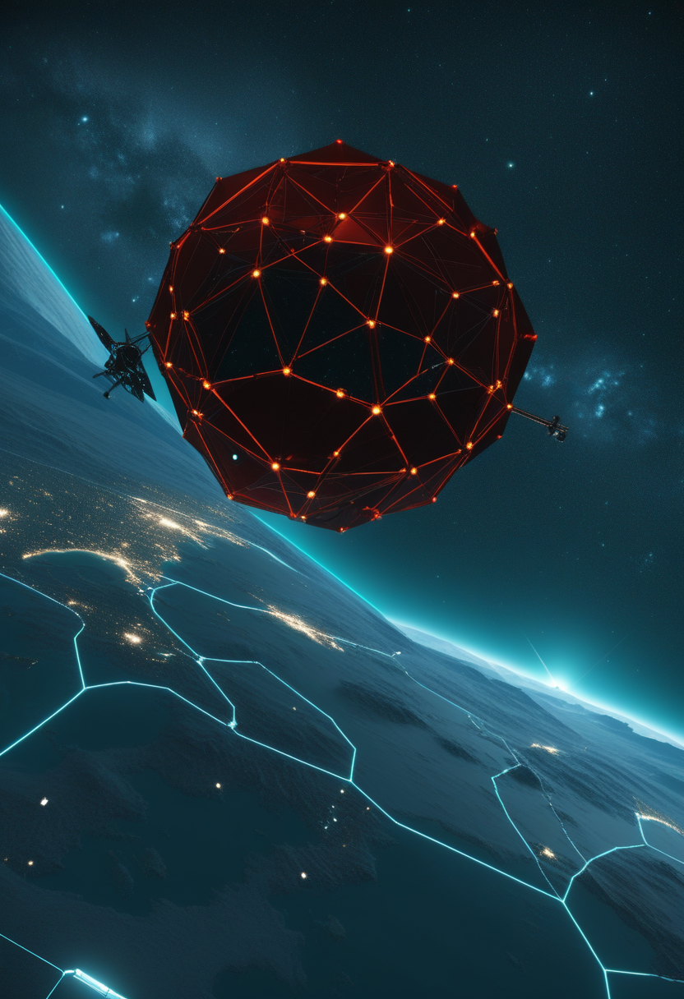
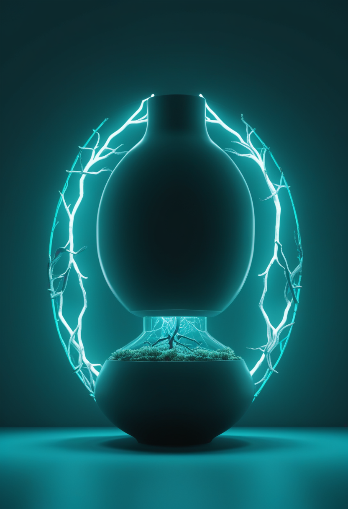
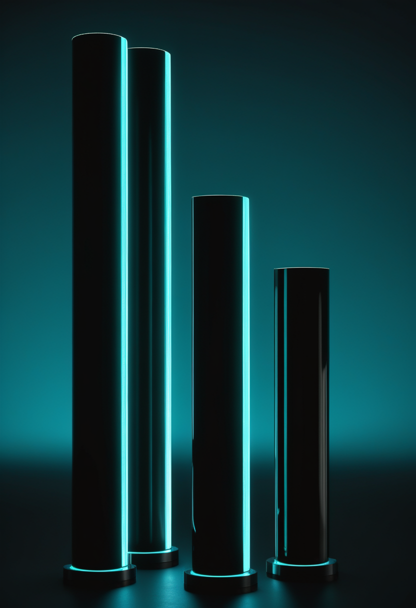
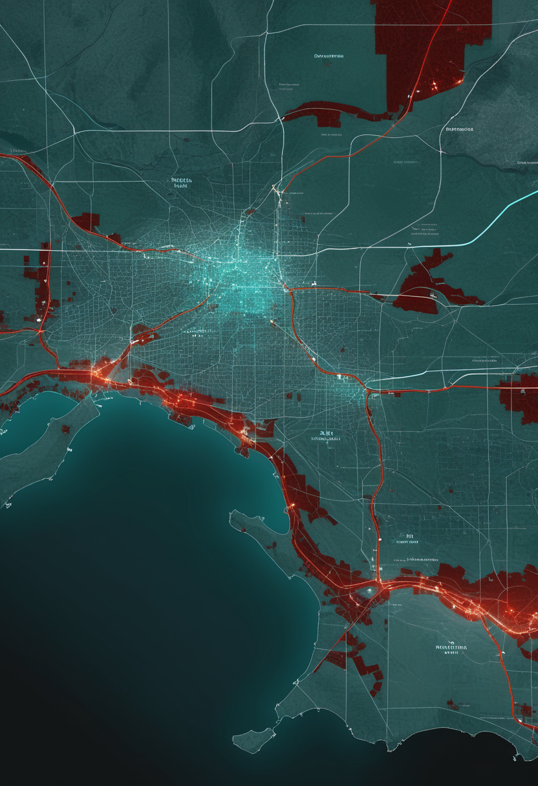
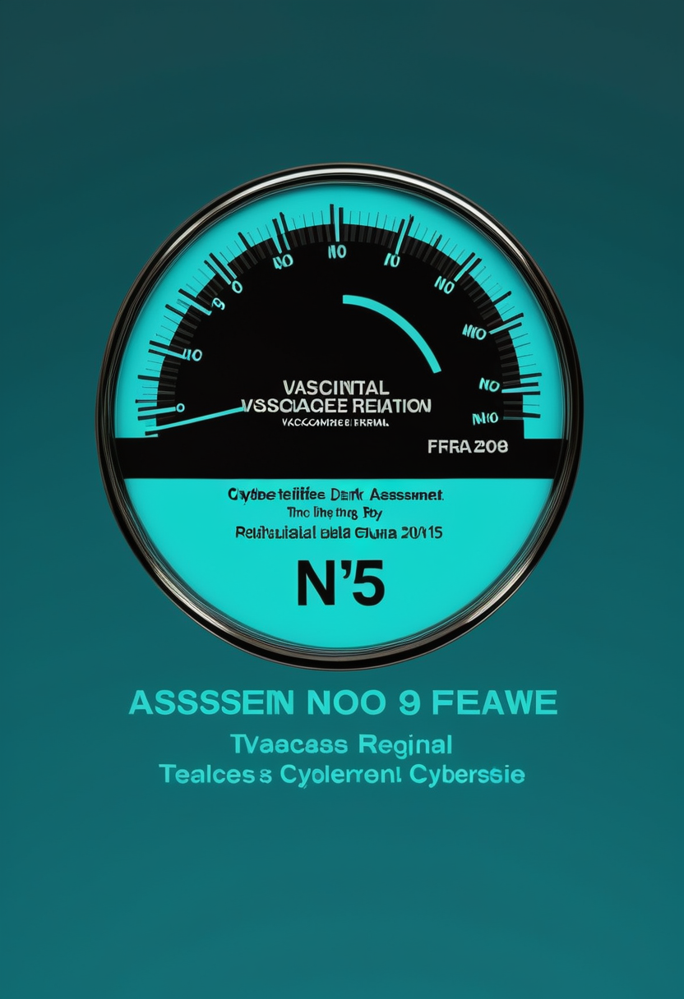
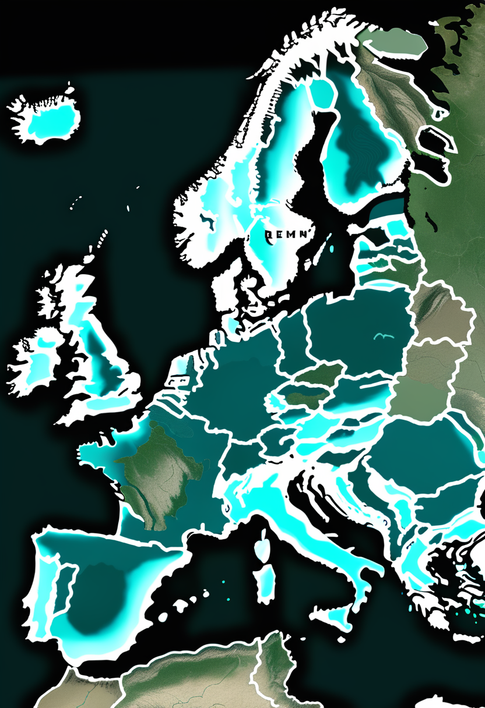
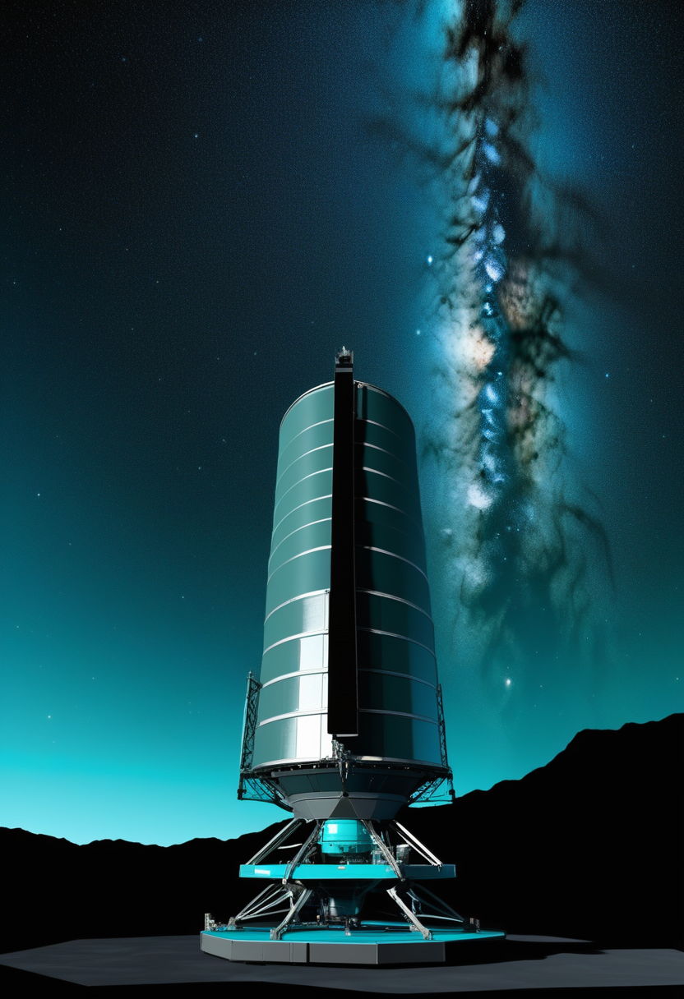
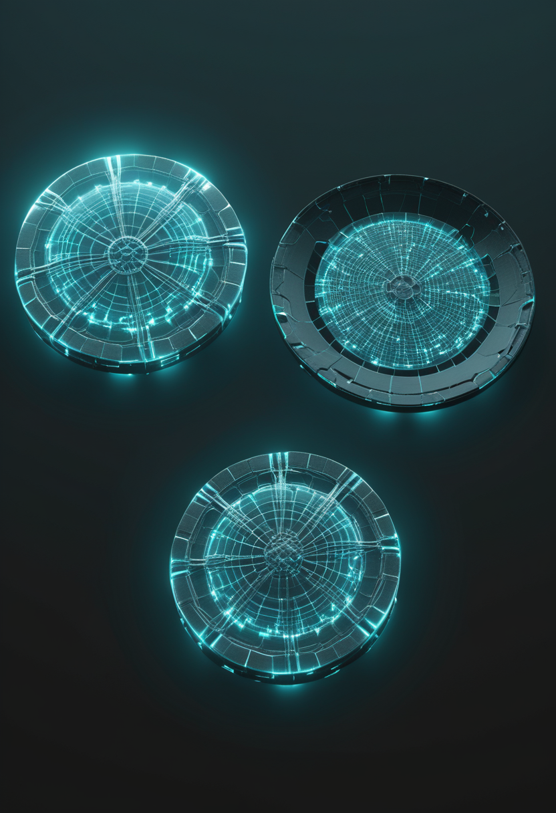

月曜日の便り。コンゴ民主共和国のブンディブジョ型エボラ出血熱は、8月12日までのデータで確定例4,665例・関連死2,184例に達し、隣接州からの輸入例により州都ブタで6つ目の州バス・ウエレへ拡大したことが8月13日までに確認された(累計値自体は8/16号既報から変わらないが、接触者追跡率84.2%・151保健区中54保健区が影響下という新たな内訳が判明)。ワクチンも特異的治療薬もない中、5月17日宣言のPHEICは解除の見通しが立っていない。命の章では、Scholar RockのSMA治療薬apitegromabがFDA審査(PDUFA 9月30日)を製造施設の問題を越えて継続し、Biogenのサラナーセンがブレークスルーセラピー指定を得て年1回投与を目指す第3相3試験を進める。自由の章では、Synchronが植込み型BCI初のFDA市販前承認を狙うピボタル試験を2026年に準備し、NeuralinkはPRIME試験を発話再建・ロボットアーム制御へ拡張、Precision・Paradromics・Blackrockへの投資も積み上がる。基盤の章では、米国の麻疹が2,566例に達し『排除認定』の審査が今週山場を迎え、欧州では西ナイル熱が北上しドイツが初の国内感染例を報告した。畏敬の章では、ナンシー・グレース・ローマン宇宙望遠鏡が当初計画より8か月前倒しの8月30日に打ち上げられ、中国の天問二号は準衛星カモオアレワへの到達を果たし、D-Waveは誤り訂正向けの新量子ビットをNatureに発表した。そして美の章では、認知デジタルツインの『5A』統治枠組みや、ハエの脳を丸ごと動かすコネクトーム実装、米3州のニューロライツ法制が、心をデジタル化する技術がすでに法と倫理の課題になっていることを映し出す ― 感染症の拡大速度と、それを追う統治・規制の速度が、今週も同じ土俵で競い合う一日となった。
8月16日号の続報 ― コンゴ民主共和国のブンディブジョ型エボラ出血熱は、8月12日までのデータで確定例4,665例・関連死2,184例に達し、隣接するオートウエレ州からの輸入例により州都ブタで6つ目の州バス・ウエレへ拡大したことが8月13日までに確認された(この累計値自体は8/16号既報から変わらない)。ECDCとAfrica CDCが13日までに公表した内訳によると、前日報告からは確定例99例・死亡56例の増加分が反映されており、隔離入院中の患者は634人、特定された接触者の84.2%が追跡下にあるという。ブンディブジョ型にはワクチンも特異的治療薬も存在せず、5月17日に宣言されたPHEIC(国際的に懸念される公衆衛生上の緊急事態)は解除の見通しが立っていない。
FDAはScholar Rockが再提出したアピテグロマブの生物学的製剤承認申請(BLA)を受理し、審査終了目標日(PDUFA)を2026年9月30日と設定した。2025年の審査完了通知(CRL)は、充填仕上げ工程を担うCatalent Indiana施設での定期査察の指摘が理由で、アピテグロマブそのものへの懸念は示されていない。その後同施設がOfficial Action Indicated分類となったため、審査は第2の充填仕上げ施設のみで継続され、9月30日の期日は変更されていない。規制パッケージの中核は第3相SAPPHIRE試験で、2〜21歳の非歩行SMA患者において既存のSMN標的療法への上乗せでHFMSEの統計学的に有意な改善を示した。

FDAはBiogenのサラナーセンにブレークスルーセラピー指定を付与した。ヌシネルセン(スピンラザ)の後継として設計された高力価アンチセンス核酸で、年1回投与での維持が想定されている。第3相プログラムは発症前の乳児から成人までを網羅し、STELLAR-1(未治療例、非盲検)、STELLAR-2(遺伝子治療後の上乗せ、無作為化二重盲検シャム対照)、SOLAR(15〜60歳、非盲検)の3試験で構成される。MDA 2026では、小児において安全に運動機能を改善したとする試験データが報告された。
Biogenは MDA および SMA Europe の学会で新たなSMAデータを発表し、DEVOTE/ONWARD試験の長期成績から高用量ヌシネルセンの便益を示した。投与量の引き上げと投与間隔の見直しは、既存患者の上積みを狙う現実的な選択肢になる。一方、遺伝子補充療法ではItvisma(onasemnogene abeparvovec-brve)が2025年11月24日にFDA承認され、1回の髄腔内投与で2歳以上の小児・思春期・成人まで適用が広がった。2019年の静脈内投与ゾルゲンスマが主に乳幼児を対象としていた制約を越えた形で、年齢層ごとの治療選択が組み立てやすくなっている。
9月30日はSMA治療の構造が変わるかどうかの分岐点になる。アピテグロマブはSMNでなく筋肉側から効かせる初の承認薬候補で、承認されれば『SMN治療+筋肉治療』の併用が標準治療の議論に入る。サラナーセンの年1回投与とあわせ、焦点は『効くかどうか』から『通院・投与負担をどこまで下げられるか』へ移りつつある。
Synchronは2026年にピボタル試験を準備している。これは同社がFDAに植込み型BCIとして初の市販前承認(PMA)を申請する前に通過すべき試験で、米国内の複数施設での登録が見込まれる。2025年11月に調達した2億ドルのシリーズD資金が、この試験と第1世代デバイスの商用化準備に充てられる。血管内から留置するステント型電極という低侵襲アプローチが、開頭を伴う競合との差別化点である。
報道ベースでは、NeuralinkのPRIME実現可能性試験は2026年初頭までに約21人へ植込みを行い、米国・英国・カナダ・UAEにまたがってカーソルおよびキーボード操作の在宅使用時間を積み上げている。姉妹試験のCONVOY(ロボットアーム制御)とVOICE(発話再建、Milestone Device指定)が、文字入力以外のエンドポイントを追加した。課題として、電極スレッドが数か月かけて皮質から後退し信号品質が漸減する現象が報告されており、2026年の試験に向けた第2世代デバイスが電極設計の見直しで対応するとされる。

累計調達額は報道ベースでPrecision Neuroscienceが5億4,300万ドル、Paradromicsが5億ドル、Blackrock Neurotechが3億5,000万ドルとされ、この3社がNeuralink・Synchronに次ぐ集団を形成している。ParadromicsのConnect-One早期実現可能性試験は、Connexus BCIの長期使用によって重度運動障害者の発話とコンピュータ操作をどこまで安全に回復できるかを評価する。Precisionは電極を脳実質に刺入せず、皮質表面に留置する薄膜アレイで思考によるデバイス操作を示した点が競合との違いになる。
2026年の焦点は『実現可能性』から『承認』へ移った。米国では運動機能や発話の再建を目的とする恒久植込み型BCIに完全なFDA市販前承認はまだ一つも出ておらず、Synchronのピボタル試験がその最初の扉になる。侵襲度(血管内・皮質表面・実質刺入)の三択が、そのまま安全性と信号品質のトレードオフとして規制判断に持ち込まれる。

ECDCの疫学更新(8月13日)によると、コンゴ民主共和国の確定例は累計4,665例、関連死は2,184例(12日までのデータ)で、前日報告から確定例99例・死亡56例の増加となった。隔離入院中の患者は634人、特定された接触者の84.2%が追跡下にある。Africa CDCは13日の記者会見で、隣接するオートウエレからの輸入例により州都ブタで6州目のバス・ウエレへ拡大したと報告し、6州151保健区のうち54保健区が影響下にある。

米CDC集計で2026年の確定例は8月13日時点で2,566例(報道ベース。CDC公式ページで最新値の確認を推奨)に達し、1991年以来の高水準となった。追跡中のアウトブレイクは38件で、症例の94%がいずれかのアウトブレイクに紐づき、93%は未接種または接種歴不明だった。国内の検証委員会が8月中旬に会合を開き、評価を汎米保健機構(PAHO)へ送付し、地域検証委員会が11月に判定を下す。

イタリアでは7月28日時点で確定84例・死亡2例が報告され、内訳は神経侵襲型37例、献血者から見つかった無症状19例、発熱27例、その他の有症状1例だった。ウイルス循環が確認された県は12州47県に及ぶ。ECDCは7月下旬時点でギリシャ、イタリア、北マケドニア、ルーマニア、スペイン、フランスの6カ国で国内感染を把握しており、8月6日までにドイツが初の国内感染例を報告した。
ブンディブジョ型には既存のエボラワクチン(ザイール型向け)が効かないため、対策は接触者追跡と隔離に依存する。追跡率84.2%は高いが、6州目への輸入例が示すとおり、州境をまたぐ人の移動が制御の最大の弱点になっている。米麻疹の11月判定と欧州の西ナイル熱北上は、いずれも『気候・移動・接種率』という同じ土台の上に乗っている。

ナンシー・グレース・ローマン宇宙望遠鏡は、8月30日07時26分EDT(日本時間20時26分)に、ケネディ宇宙センターLC-39AからSpaceXファルコンヘビーで打ち上げられる。当初計画より約8か月早く、年初に公表された9月の予定からも前倒しされた。視野はハッブルの少なくとも100倍で、運用期間中に10億個規模の銀河の光を測定し得る。星の光を遮って系外惑星や惑星形成円盤を直接観測でき、ダークエネルギー、系外惑星、赤外線天体物理の主要問題に切り込む。単一ミッションで約10万個の系外惑星発見が期待されている。
中国国家航天局(CNSA)の天問二号は、約10億kmの航行を経て地球の準衛星である近地球小惑星カモオアレワ(469219 Kamoʻoalewa)に到達し、7月2日に約20kmの距離から初の近接画像を取得した。搭載機器はカメラ、分光計、磁力計、探査レーダー、粒子分析器、レーザー航法センサーで、形状・組成・内部構造を調べる。この小惑星は月の破片である可能性が指摘されており、採取試料の分析がその検証になる。試料カプセルは2027年4月に地球へ投下され、探査機はその後、第2の目標である彗星311P/PANSTARRSへ向かう。
D-Waveは8月5日、ゲート型量子技術が規模拡大時にハードウェア負荷を大きく抑えたまま効率的な誤り訂正を実現できることを示す研究をNatureで公表したと発表した。dual-rail erasure qubitは量子情報を2つの空洞に分散して符号化し、光子の漏れなど頻出のエラーを『消失(erasure)』として検出可能にする。2量子ビットゲートの忠実度は約99.9%、ゲート時間は約500ナノ秒で、ビットフリップは100万回に1回程度まで抑制された。シミュレーションでは誤り訂正の各段階で論理エラー率を最大10分の1に低減でき、2032年までに実用的な100論理量子ビット系に到達する道筋を示すとしている。
ローマンは『広く浅く』、ウェッブは『狭く深く』という役割分担で、10万個規模の系外惑星統計はウェッブの精密分光につなぐ観測候補を供給する。量子側の要点は量子ビット数ではなく『エラーを消失として検出できる』という設計思想で、必要な物理量子ビット数を減らせる点が実用化時期を左右する。
2026年6月のarXiv論文『Cognitive Digital Twins: Ethical Risks and Governance for AI Systems That Model the Mind』は、認知デジタルツイン(CDT)を『特定個人の認知を、行動・文脈・生理データから継続更新して予測・模擬し、あるいは本人の代理として振る舞う動的な計算的表現』と定義した。論文はauthority(権限)、autonomy(自律)、access and control(アクセスと制御)、accountability(説明責任)、availability(可用性)の5軸からなる5Aガバナンス枠組みを提示している。
ショウジョウバエ中央脳のコネクトーム(約14万ニューロン・約5,000万シナプス)をデジタルの身体に載せ、行動を再現する試みが公開され話題になった。一方でヒトはまだ1mm³の皮質サンプル(約5.7万細胞・約1.5億シナプス)の段階で、全脳の約860億ニューロン・100兆超シナプスまでには約100万倍の隔たりがある。ハーバード、Janelia、Google Researchの協働によるゼブラフィッシュ全脳コネクトームは2026年中の完成が見込まれ、マウス全脳の細胞レベル模擬は2030年代が現実的とされる。

米国ではコロラドHB24-1058が神経データをセンシティブな『生物学的データ』として初めて保護し、カリフォルニアSB1223がCCPA上のセンシティブ個人情報に組み入れ、モンタナSB163が『精神的増強(mental augmentation)』を初めて法文に取り込んだ。EU AI法は第5条で職場・教育現場での感情認識や、心理的害をもたらすサブリミナル操作を禁じる。ただし米連邦レベルの規律はFTC法第5条の不公正・欺瞞的行為の禁止のみで、Neurorights Foundationの2024年調査では消費者向けニューロテク30社中29社のプライバシー方針が神経データへの実質的な制限なきアクセスを許していた。2026年の世界ニューロテク市場は190億ドルを超える。
『心をデジタル化する』議論は、全脳エミュレーションという遠い目標よりも、すでに稼働している認知デジタルツインと消費者向け神経データ収集の側で先に法制度の問題になっている。市場190億ドルに対して30社中29社が実質無制限アクセスを許す状態は、規制が技術ではなくビジネス慣行に追いついていないことを示す。
2026年8月13日までに確認されたところでは、コンゴ民主共和国のブンディブジョ型エボラ出血熱は確定例4,665例・関連死2,184例に達し、隣接州からの輸入例により6つ目の州バス・ウエレへ拡大した。数値自体は8月16日号の既報から変わらないが、接触者追跡率84.2%・151保健区中54保健区が影響下という新たな内訳が判明し、5月17日宣言のPHEICは解除の見通しが立っていない。命の章では、Scholar RockのSMA治療薬アピテグロマブがFDA審査(9月30日)を製造施設問題を越えて継続し、Biogenのサラナーセンがブレークスルーセラピー指定を得て年1回投与を目指す第3相試験を進めた。自由の章では、Synchronが植込み型BCI初のFDA市販前承認を狙うピボタル試験を2026年に準備し、NeuralinkはPRIME試験を発話再建・ロボットアーム制御へ拡張した。基盤の章では、米国の麻疹が2,566例に達し『排除認定』の審査が今週山場を迎え、欧州では西ナイル熱が北上しドイツが初の国内感染例を報告した。畏敬の章では、ローマン宇宙望遠鏡が8か月前倒しの8月30日打ち上げへ、天問二号は準衛星カモオアレワへ到達し、D-Waveは誤り訂正向けの新量子ビットをNatureに発表した。そして美の章では、認知デジタルツインの統治枠組みやハエの脳を動かすコネクトーム実装、米3州のニューロライツ法制が、心をデジタル化する技術がすでに法と倫理の課題になっていることを示した ― 感染症の拡大速度と、それを追う統治・規制の速度が同じ土俵で競い合う、月曜日の朝となった。
では、また明日の朝に。 — JaH